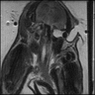

File Handling
MRI Acquisition Data can not only be generated from simulation but also from files. Currently, MRIReco supports the ISMRMRD file format the Bruker file format (at least partially).
The ISMRMRD is fully supported with proper read and write support. For the Bruker file format only reading of data is supported.
The example discussed in the following can be run by entering
include(joinpath(dirname(pathof(MRIReco)),"../docs/src/examples/exampleIO.jl"))into the Julia REPL.
We start by loading a file handle to a Bruker dataset using
f = BrukerFile("brukerfileCart")This file handle does not yet contain the data. To load the data we call
raw = RawAcquisitionData(f)which will load all data that can be encoded into a RawAcquisitionData object. For reconstruction we can then convert it to the preprocessed data format and call
acq = AcquisitionData(raw)
params = Dict{Symbol, Any}()
params[:reco] = "direct"
params[:reconSize] = (acq.encodingSize[1],acq.encodingSize[2])
img = reconstruction(acq, params)This will result in the following image:

Saving
But loading the data is only one important operation. Lets suppose that you have performed an expensive simulation resulting in a raw data object raw. To store this data one can simply run
fout = ISMRMRDFile("outputfile.h5")
save(fout, raw)which will generate an ISMRMRD file containing the data.
Conversion
It should now be no surprise that MRIReco.jl does also allow for file conversion:
f = BrukerFile("brukerfileCart")
raw = RawAcquisitionData(f)
fout = ISMRMRDFile("outputfile.h5")
save(fout, raw)Currently, this is only limited to converting Bruker files into ISMRMRD files but the infrastructure is not limited to that.